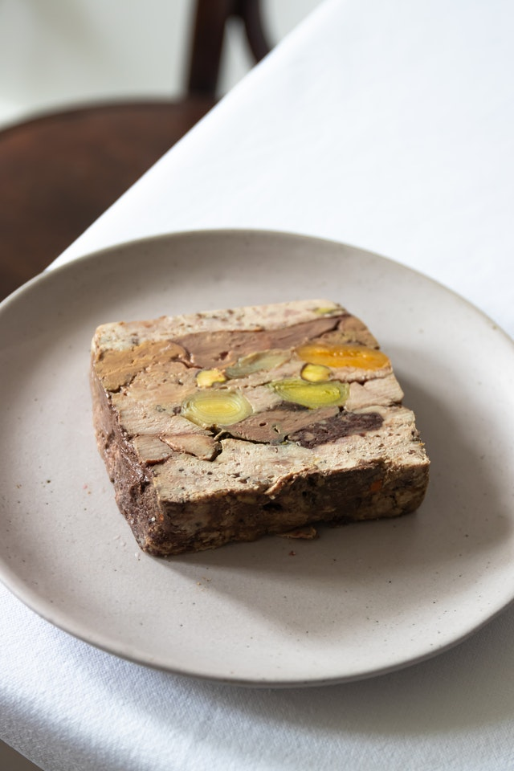

MeatLoaf

Ingredients
- 1.5 lbs ground beef (ground shoulder roast is good)
- 1 slice bread (broken or chopped finely)
- 1 egg
- 1 small vidalia onions or 1 small type sweet onion, finely chopped
- 1 teaspoon salt
- 0.25 teaspoon black pepper
- 4 tablespoons ketchup
- 0.5 cup whole milk or 1/2-2/3 cup half-and-half
Directions
- Combine meat loadf ingredients and place into a loaf baking dish
- Smoouth out top.
- Bake at 350 degrees F about 1 hour to 1 hour and 1 hour 15 minutes or until done